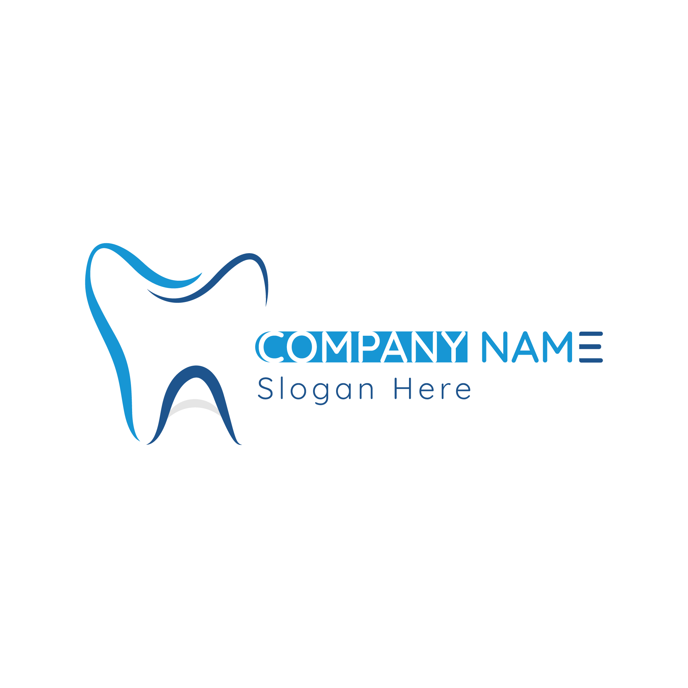

PREMIUM SURGERY • SYLHET, BANGLADESH
A considered approach to restorative, implant, and aesthetic care—planned with modern diagnostics, delivered with calm precision, and tailored around you.
We blend biologically safe materials with cutting-edge digital diagnostics to deliver dental care that lasts generations.
Flawless, handcrafted ceramic veneers and digital smile planning that harmonizes perfectly with your individual facial structure.
Advanced replacement of lost dentition using titanium and metal-free zirconium fixtures backed by virtual surgical positioning templates.
Atraumatic, bone-preserving extractions using advanced growth-factor protocols to accelerate localized tissue regeneration.
Eliminating underlying infection while utilizing dental structures with premium aesthetic, composite-resin and CAD/CAM inlays.
At our flagship facility in Sylhet, patients experience the intersection of high academic expertise and luxury therapeutic environments. Dr. Moniruzzaman treats oral health as a foundational biological pillar, utilizing only premium biocompatible materials and advanced tools.
Sterilization Protocol
3D Intraoral Scans
BDS, PGT, DDS (Aesthetic Reconstructions)
Senior Dental SurgeonWith over fifteen years of clinical practice, Dr. Moniruzzaman has pioneered minimally invasive surgical dental arts in the Sylhet region, blending advanced surgical practices with patient-centered comfort.
A continuous learner under global aesthetic pioneers, Dr. Moniruzzaman’s treatments focus on oral-systemic connection. This philosophy dictates that every tooth structure saved is a biological victory, utilizing dental implants only when natural structures have failed.
Observe the definitive, natural structural balance returned through our aesthetic biological restoration workflows. Drag the handle below left and right.
Our technological ecosystems exclude physical molds and standard procedures, optimizing accuracy through computer-aided operations.
Direct digital tooth rendering within 1/100th of a millimeter, eliminating physical tray impressions.
Operating under high-magnification Carl Zeiss lenses ensures every micro-anatomy canal is disinfected.
Cuts, sterilizes, and cauterizes periodontal tissues in high silence with rapid physiological recovery.
How we prioritize physical care comfort and clinical clarity from appointment setup to long-term health review.
We analyze oral bio-mechanics using intraoral cameras and 3D visual mockups, providing customized restorative plans.
Interventions are structured carefully to minimize inflammatory reactions, ensuring absolute pain management protocols.
Extended longevity reviews and cellular level tissue evaluation ensure your clinical restoration integrates perfectly.
Step inside a soothing space engineered to reduce anxiety, combining premium acoustics with state-of-the-art operatory seating.
Real case histories of patients returning to absolute comfort and visual smile confidence under our primary clinical care.
Dr. Moniruzzaman designed a complete biological reconstructive crown sequence for me. His gentle technique is unlike any dental professional I have ever visited in Bangladesh. Incredible care.
I flew from London specifically for smile alignment and veneer procedures at this clinic. The absolute use of digital scanners and aesthetic mockups felt immensely high-end. Highly recommended.
My root therapy was absolutely painless. Using Zeiss microscopes, Dr. Moniruzzaman performed a thorough restoration of my molar. The glass clinic itself is very serene.
Find detailed answers concerning treatment duration, biological safety, customized dental scheduling and international client provisions.
ASK A DIFFERENT QUESTIONTypically, from the initial intraoral scan and digital design to the final custom ceramic bonding, it requires only two clinical sessions over approximately 5 to 7 days, maintaining structural protection at every phase.
Yes. Biocompatible composite resins and zirconium materials completely eliminate heavy metals like mercury. They bond directly to enamel structure, reducing healthy enamel destruction and avoiding temperature-related expansions.
Absolutely. We coordinate diagnostic scans and digital evaluations for international patients via web consultations prior to arrival in Sylhet, ensuring expedited clinical treatment timelines.
Our facility runs an advanced Class-B multi-stage medical autoclave cycle, wrapping all diagnostic handpieces for single surgical sessions with chemical indicator tags monitoring sterilizing heat.
Choose premium aesthetic execution and medical trust. Request a personalized surgical or restorative appointment below, and our care representative will confirm your schedule.
Easily accessible within the core of Sylhet, providing secured parking, elevator access, and exceptional clinical hospitality.
📍 Suite 4A, Landmark Tower, East Zindabazar, Sylhet, 3100, Bangladesh